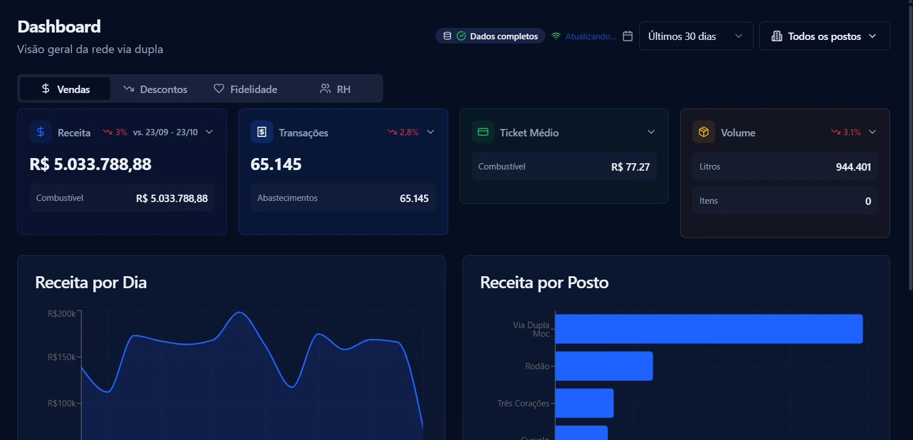

Relacionamento que continua.
Desconto na bomba, pontos e benefícios criam razões para o cliente escolher seu posto na próxima visita.

Agendar conversa ↗PARA DONOS DE POSTOS E REDES
Transforme benefícios em motivos para escolher seu posto. Conecte fidelidade, relacionamento e visibilidade da operação com o Fulltank+.
Quero conhecer para meu posto ↗
Interface real da operação Via Dupla. Indicadores exibidos não são promessa de resultado para outros postos.
FIDELIDADE QUE FAZ PARTE DA OPERAÇÃO
A oportunidade de vender mais começa em criar uma relação que continua depois do abastecimento.
Desconto na bomba, pontos e benefícios criam razões para o cliente escolher seu posto na próxima visita.
Acompanhe receita, transações, ticket médio e volume. Compare períodos e postos com os filtros da retaguarda.
Gerencie clientes e recursos do programa em uma plataforma para sua rede e seus postos.
Uma plataforma conectando clientes e redes parceiras.
A base total não representa clientes ativos ou disponíveis em uma região específica.PENSE ALÉM DA PRIMEIRA VISITA
Ofereça uma experiência que o cliente consegue consultar no próprio celular, enquanto você acompanha os indicadores da operação.
Vamos conversar sobre sua rede →SUA REDE EM UMA PLATAFORMA MULTIRREDES
O cliente usa um único aplicativo para consultar diferentes redes parceiras. Sua rede conta com uma retaguarda própria para acompanhar a operação e gerenciar os recursos de fidelidade.
Mais facilidade para encontrar postos e consultar as vantagens de cada rede.
Acompanhe os indicadores e gerencie o relacionamento com seus clientes na retaguarda.
Os benefícios seguem as condições de cada rede. Conheça as possibilidades na apresentação comercial.
SEU POSTO NA PRÓXIMA CONVERSA
Conte um pouco sobre sua operação. Conheça a retaguarda, o programa de benefícios e as condições para participar.